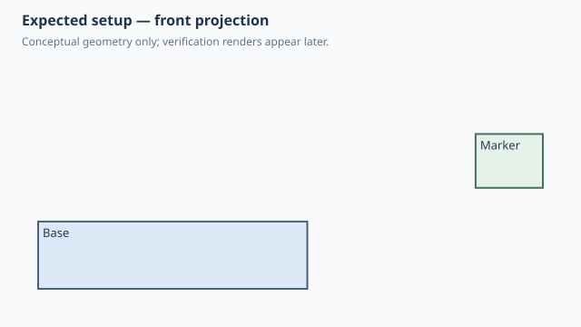

Forge qualification case
As-built rigid relationship preserves pose
1. Test setup

Test goal
Verify that attach(as_built=True) records a rigid native assembly relationship without re-positioning or re-orienting a child occurrence that already has an authored pose.
Pass criteria
The Base remains at [-20,-15,0]..[20,15,10]. The 30x10 Marker remains quarter-turned to a 10x30 footprint at [45,5,15]..[55,35,23] after the native as-built joint is created.
2. Implementation under test
Fixture source
"""Qualification: as-built attachment preserves an existing child pose."""
class Base:
WIDTH = 40.0
DEPTH = 30.0
HEIGHT = 10.0
def build(self):
return Box(self.WIDTH, self.DEPTH, self.HEIGHT)
class Marker:
LENGTH = 30.0
WIDTH = 10.0
HEIGHT = 8.0
def build(self):
return Box(self.LENGTH, self.WIDTH, self.HEIGHT)
class AsBuiltAttach:
def build(self):
base = Base()
marker = (
Marker()
.move(x=50, y=20, z=15)
.rotate(axis=(0, 0, 1), degrees=90)
.attach(base, as_built=True)
)
return base + marker
AsBuiltAttach()
Public Forge API used
Marker().move(x=50, y=20, z=15).rotate(axis=(0,0,1), degrees=90).attach(base, as_built=True)
Forge model represented by this fixture
One Base and one non-square Marker occurrence. The Marker already owns a translation and rotation before the Attachment is added; the as-built relationship carries no parent/child anchor, offset, gap or angle.
3. Generated SolidCraft relationship
Forge emits occurrence.move for the existing Marker pose first, then joint.as_built(type='rigid', a='Base:1', b='Marker:1'). No joint.create or anchor-origin solve is involved.
Show generated relationship / command details
[
{
"command": "joint.as_built",
"params": {
"type": "rigid",
"name": "Attach Marker:1 to Base:1",
"a": "Base:1",
"b": "Marker:1"
}
}
]3. Results
6. Evidence and references
Raw evidence
Show generated files and measurements
Reference models
These comparisons clarify concepts; Forge does not promise API compatibility with them.
- SolidCraft: The native as-built rigid relationship constrains two already-positioned occurrences without solving a new mating position.